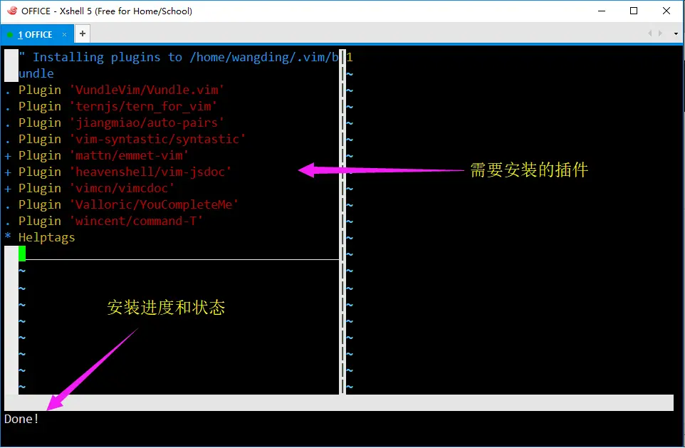

升级开发环境
Mocha 虚拟机开发环境，可以完成 Node.js 后端开发。下面的安装步骤将使这个开发环境具备前端开发能力。另外，Node.js 后端开发环境也需要进行升级。
在确保自己的虚拟机能上网的前提下，执行以下搭建前端开发环境的步骤：
1. 更新 tools 仓库
cd
cd wd
rm -rf tools
git clone https://github.com/wangding/tools
2. 安装 tools 仓库的 vim 配置文件
cd
cd wd/tools
cp .vimrc ~
3. 安装 vim 插件
注意：安装过程中，不要中途退出。一定要等 vim 提示 Done 后，才能退出。
vim // 命令行打开 vim 编辑器
:PluginInstall // vim 的普通模式下，按冒号进入命令模式
// 输入 PluginInstall 命令，注意命令的大小写
:q // vim 提示 Done 时，:q 退出安装界面
:q // 退出 vim

4. 验证安装的 emmet vim 插件
vim a.html // 命令行打开 vim 编辑器
i // 进入插入模式
!<ctrl>+y, // 输入感叹号，然后同时按 ctrl 和 y 键，然后按逗号键
// vim 窗口中应该出现 HTML5 的页面框架代码
:q! // 不保存退出
5. 验证安装的 jsdoc vim 插件
vim a.js // 命令行打开 vim 编辑器
i // 进入插入模式
// 写一个 x + y 的 add 加法函数，代码如下
function add(x, y) {
return x + y;
}
ESC // 退出插入模式，进入普通模式，移动光标到第一行
:JsDoc // 按冒号进入命令模式，输入 JsDoc<回车>，注意命令大小写不要写错
// vim 窗口中应该出现函数头注释框架
:q! // 不保存退出
6. 验证 CSS 代码补全功能
vim a.css // 命令行打开 vim 编辑器
i // 进入插入模式
// 写一个 body 的 CSS 样式代码，如下：
body {
background: // 注意在输入冒号和空格之后，应该弹出代码补全窗口
ESC // 回到普通模式
:q! // 不保存退出
7. 验证代码注释工具
vi a.js // 命令行打开 vim 编辑器
i // 进入插入模式，接下来，写六行代码
var name = 'wangding',
qq = '408542507',
log = console.log;
log(`name: ${name}`);
log(`qq : ${qq}`);
ESC // 回到普通模式
// 上下移动光标到任意一行代码
<space>cc // 按空格和两个 c 键，对当前行注释
<space>c<space> // 按空格和 c 键以及空格键，取消当前行注释
<space>V // 块选当前行
jj // 向下选中两行
<space>cc // 对选中多行进行注释。取消注释，选中多行，按<space>c<space>
8. 安装开发辅助工具
su // 切换到 root 账户
yum install -y tree // 安装 Linux 命令行 tree 工具和语法高亮工具
npm i -g htmlhint // 安装 HTMLHint 静态代码检查工具
npm i -g csslint // 安装 CSSLint 静态代码检查工具
npm i -g eslint // 安装 ESLint 静态代码检查工具
npm i -g browser-sync // 安装热加载工具
exit // 切换到开发者账户 wangding
9. 验证 JavaScript 前端代码自动补全和后端代码补全
cd
mkdir spa
cd ~/spa
wget https://sample.wangding.co/nodejs/tern-project
mv tern-project .tern-project
vim a.js // 命令行打开 vim 编辑器
i // 进入插入模式
window. // 输入 window 和点之后看到浏览器窗口对象 window 的方法提示
ESC // 回到普通模式
:q! // 不保存退出
vim a.js // 命令行打开 vim 编辑器
i // 进入插入模式
$. // 输入 $ 和点之后看到 jQuery 全局对象 $ 的方法提示
ESC // 回到普通模式
:q! // 不保存退出
vim a.js // 命令行打开 vim 编辑器
i // 进入插入模式
process. // 输入 process 和点之后看到 node.js 全局对象 process 的方法提示
ESC // 回到普通模式
:q! // 不保存退出
10. 安装 nvm 并升级 node.js 版本
curl -o- https://raw.githubusercontent.com/creationix/nvm/v0.33.11/install.sh | bash
上面的安装步骤结束后，编辑 .zshrc 文件，执行命令：vi ~/.zshrc。在 zshrc 文件的最后增加下面两行代码：
alias lrd="browser-sync start --server --port 8080 --no-open --files ."
alias pl="sudo firewall-cmd --zone=public --list-ports"
export NVM_DIR="$HOME/.nvm"
[ -s "$NVM_DIR/nvm.sh" ] && \. "$NVM_DIR/nvm.sh" # This loads nvm
保存 .zshrc 文件的修改，退出 vim。执行 linux bash 命令 exit 退出控制台，XShell 重新连接虚拟机。
升级 Node.js 版本到 10.16.3，执行下面的命令：
node -v // 当前的 Node.js 版本应该是 6
nvm install 10
node -v // 升级后 Node.js 版本应该是 10
11. 验证开发辅助工具
tree ~/wd // 应该看到 wd 目录的树状结构
htmlhint --version // 应该看到版本号不低于：0.9.13
csslint --version // 应该看到版本号不低于：v1.0.4
eslint --version // 应该看到版本号不低于：v4.17.0
browser-sync --version // 应该看到版本号不低于：2.23.6
掌握工具用法
1. Vim 代码编辑器
- 阅读 Vim 笔记
- 执行下列命令
cd // 回到家目录 git clone https://github.com/wangding/jsnotepad tree jsnotepad // 查看 jsnotepad 项目下的代码文件 - 用 vim 打开 jsnotepad 项目中自己感兴趣的代码文件 html, css 或 js
- win 10 浏览器窗口（查看 vim 笔记）和 XShell 终端窗口平铺，左边是笔记，右边是终端窗口
- 对照左边文档，在终端窗口中练习 vim 的用法
2. Emmet 工具
- 安装 Emmet vim 插件，上面的开发环境搭建已经介绍过了
- Emmet 工具在 vim 编辑器中的快捷键：
+y, - Emmet 语法，请参考：https://docs.emmet.io/abbreviations/syntax/
- Emmet vim 插件用法，请参考：https://github.com/mattn/emmet-vim/blob/master/TUTORIAL
- 掌握 Emmet vim 常用的快捷键，
+y，逗号，d，a，m，k，/，n - 创建一个 emmet.html 文件，在 vim 中打开此文件，练习 Emmet 插件的用法
3. 静态代码检查工具
- 安装静态代码检查工具，上面的开发环境搭建已经介绍过了
- HTML 静态代码检查的规则，请参考：https://segmentfault.com/a/1190000013276858
- CSS 静态代码检查的规则，请参考：https://github.com/CSSLint/csslint/wiki/Rules
- JavaScript 静态代码检查的规则，请参考：http://eslint.cn/docs/rules/
- 创建 HTML、CSS 和 JavaScript 三个代码文件，在 vim 中编辑代码，体验静态代码检查插件的用法
4. 热加载工具
- 安装热加载工具，上面的开发环境搭建已经介绍过了
- 执行如下操作，掌握热加载工具的用法：
cd ~/spa // 进入前端页面所在的目录
lrd // 运行热加载程序，热加载程序会启动一个 Web 静态文件服务
// 在 XShell 另一个控制台窗口编写代码
vi index.html
i // 进入插入模式
! ctrl + y, // 产生 H5 页面框架代码
ESC // 从插入模式回到普通模式
<space>w // 同时按下空格和 w 键，保存代码
- 打开 win10 的 chrome 浏览器
- 输入热加载程序提示的 URL 地址
- chrome 浏览器中应该能看到刚才编写的页面代码
- 修改网页代码，保存，chrome 浏览器会自动刷新
- 通过热加载，浏览器能实时反映出页面的最新变化
- 不用手动刷新，提高开发效率
- 退出热加载按 Ctrl + C